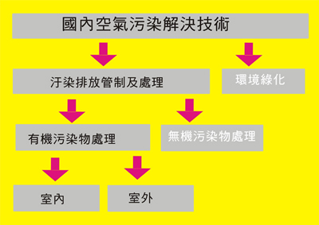
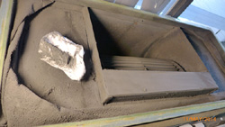
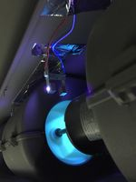
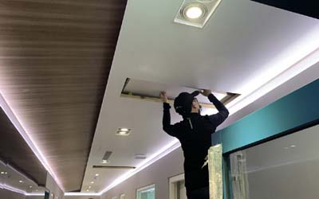

空氣品質改善內容
室內空氣品質問題解決內容如下


1.粉塵:進風口需有濾網過濾,空調.風管.濾網(其中濾網至少一年2-3次)清潔,
2.細菌:空調及 室內空間消毒毒及整理,或是使用無機抗建材或清淨機等方法.
3.有機氣體(臭味.有害氣體):使用清淨法除去或通風法 及除臭之材料予以分解會吸附
4.二氧化碳:通風法為主,但如天氣炎熱,過度通風則會引起耗能問題.國內室內空氣品質法規室內空氣品質法於民國103年11月23日公布,其公告應符合本法之第一批場所自民國103年7月1日生效,自公告第1-2批場所,並開始施行,至今已7-8年歷史

改善室內空氣品質方法
1.污染源控制Source Control:檢視污染源及解決方案,此為最根本之方法
2.空氣流通:藉由換氣,可減少室內污染 以及稀釋污染濃度
3.環境定期整理:通風管到濾網及室內清潔 定期清潔就可達到室內污染減少
4.室內植哉:藉由植物可將室內二氧化碳或部份有害氣體降低
5.輔助方法:在密閉室空間則賴於空氣調節系統(air-handling system)將室內的污染阻隔或排除,例如空氣清淨機,排風扇..等。

空氣品質改善技術說明
1粒狀污染物:濾網/過濾,捕捉 ,靜電集塵.負離子.電漿/粒子帶電+捕捉
2氣狀污染物:活性碳或其它吸附材/吸附 , 臭氣/分解 , 光觸媒/分解
3微生物污染物: 臭氣/分解 , 紫外光/去活化 ,光觸媒/分解 , 電漿/抑制
雖然室外空氣品質一般來說會比室內為佳,但PＭ2.5化學組成及源解析因季節變化有所改變，其中來源為灰塵、燃煤、生物質燃燒、汽車廢氣.焚燒、工業污染和二次無機氣溶膠,會造成室外空氣比室內空氣更糟。等。